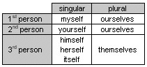

1.115 Referring back to the subject: reflexive pronouns
When you want to show that the object or indirect object of a verb is the same person or thing as the subject of the verb, you use a reflexive pronoun.
Some verbs are very frequently used with reflexive pronouns. For information about these, see paragraphs 3.27 to 3.32.
Here is a table of reflexive pronouns:
